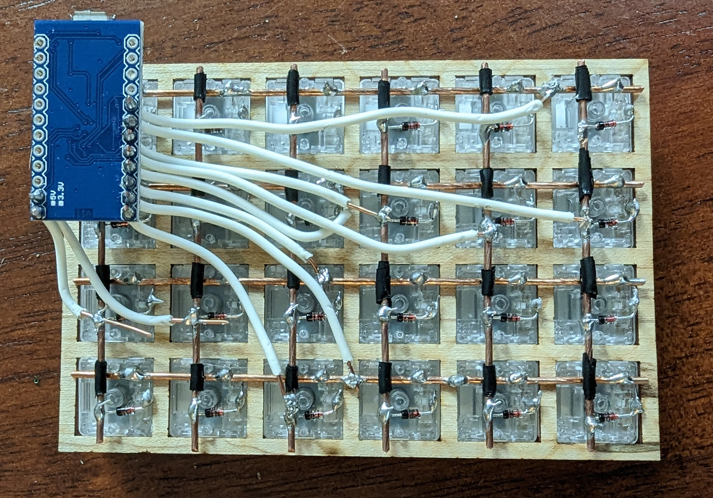
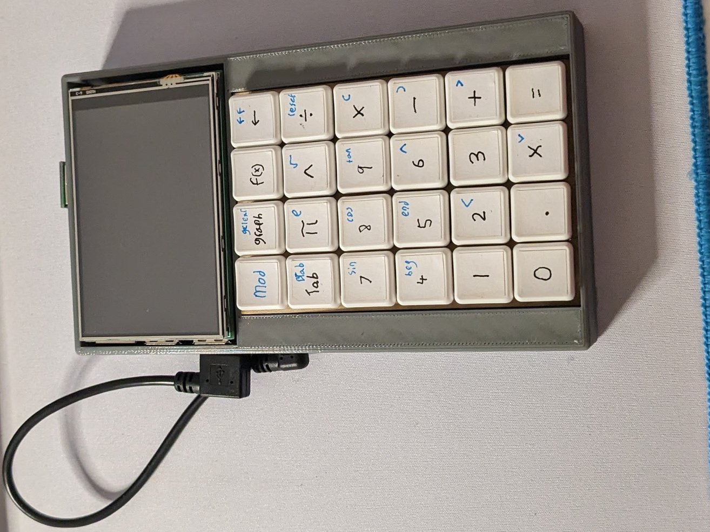

Orion
Andrews
Andrews
The
Build
Build
Steps to building your own calculator.
Materials
In this guide I will lay out the general steps for
assembling the first prototype of my calculator on your own.
First, a list of materials.
You will also need access to at least a 3D printer. A laser cutter will make dealing with the switchplate a lot easier, but it isn't necessary.
Those of you who may have read the narrative section of This calculator will notice that most of these items are specifically for the keyboard; it is the item that will take the most time, effort, and resources to construct.
On the software side of things, you will need the link to my github above as it contains the executable you will need to run this calculator.
- Raspberry Pi 3b with a micro SD card for an OS
- This screen (looks like it comes with a case now)
- These keyswitches, 3 orders of 10
- These keycaps, 3 orders of 1Ux10
- An Arduino Pro Micro
- Some 16 guage copper wire. Maybe 4 ft to be safe.
- Insulated annunciator wire
- Some diodes. These work well.
- Electrical tape.
- Soldering Iron
You will also need access to at least a 3D printer. A laser cutter will make dealing with the switchplate a lot easier, but it isn't necessary.
Those of you who may have read the narrative section of This calculator will notice that most of these items are specifically for the keyboard; it is the item that will take the most time, effort, and resources to construct.
On the software side of things, you will need the link to my github above as it contains the executable you will need to run this calculator.
Setting up the Pi
The first thing you will need to do is flash your Raspberry
Pi. There are instructions all over the internet and so I
will leave you to figure it out. However, AND THIS IS
IMPERATIVE, you must select the 64 bit version of Raspberry Pi OS. The executable will not run on the 32 bit that is
standard. You can select 64 bit under the "Raspberry Pi OS
(other)" tab, you are just looking for the regular 64 bit
version.
Once you have the micro SD card flashed, plug it into your Pi, power the Pi, and connect up a display and keyboard. Once you are in the desktop, you will need to get the Pi's IP address. This guide provides good guidance. You needn't SSH into the Pi yet, just make sure you have the IP address.
Now you need to get the executable that holds the calculator. On your desktop, using my github link, navigate to the "execs/arm64/" directory. Inside you should see "calcapp_1.0.0_arm64.deb". Click on the .deb file and click download.
From here you will need to copy this over to the Raspberry Pi. There are several ways to do this. To get around having to copy it entirely, you could download it from the Pi's browser. Another option would be a USB stick. You could also use SSH to copy it over. There are many guides online so I won't cover it here.
Once you have the .deb file on your Raspberry Pi, you will need to install it. From the terminal, navigate to the directory that has the .deb file. To install it, type "sudo apt install calcapp_1.0.0_arm64.deb". This will install the .deb as an application you can run anywhere on the Raspberry Pi by typing "calcapp". However, we want to take this a step further. First, the resolution of the Pi needs to be lowered so as to fit the screen and second, we want this calcapp to autoexecute on boot. To do this, we first need to create a shell script that will run two commands. From the home directory of the Pi, type "nano exec.sh". Once inside nano, add two lines of text: "xrandr -s 720x480" and "calcapp". Save changes and exit nano. Now, type "chmod +x exec.sh" into the terminal to make the script executable. "xrandr -s 720x480" will set the resolution outputted by the Pi to 720x480 which, while larger than the screen, is the same 3:2 aspect ratio as the 480x320 resolution that the screen is, this helps reduce blurring.
That script we just created is only one part of having the calculator and resolution change automatically. Now we need to actually make it autoexecute. From the home directory in the terminal, type "cd .config" to enter into the .config directory. From here, type "mkdir autostart", this will create a new directory in .config that Raspberry Pi looks for when booting up. Change into autostart with "cd autostart/". Raspberry Pi looks for a special kind of file to execute named with a ".desktop" extension. Thus, we need to create a file called exec.desktop. Type "nano exec.desktop" to create a .desktop file and begin editing it. In the file, type:
Once you have the micro SD card flashed, plug it into your Pi, power the Pi, and connect up a display and keyboard. Once you are in the desktop, you will need to get the Pi's IP address. This guide provides good guidance. You needn't SSH into the Pi yet, just make sure you have the IP address.
Now you need to get the executable that holds the calculator. On your desktop, using my github link, navigate to the "execs/arm64/" directory. Inside you should see "calcapp_1.0.0_arm64.deb". Click on the .deb file and click download.
From here you will need to copy this over to the Raspberry Pi. There are several ways to do this. To get around having to copy it entirely, you could download it from the Pi's browser. Another option would be a USB stick. You could also use SSH to copy it over. There are many guides online so I won't cover it here.
Once you have the .deb file on your Raspberry Pi, you will need to install it. From the terminal, navigate to the directory that has the .deb file. To install it, type "sudo apt install calcapp_1.0.0_arm64.deb". This will install the .deb as an application you can run anywhere on the Raspberry Pi by typing "calcapp". However, we want to take this a step further. First, the resolution of the Pi needs to be lowered so as to fit the screen and second, we want this calcapp to autoexecute on boot. To do this, we first need to create a shell script that will run two commands. From the home directory of the Pi, type "nano exec.sh". Once inside nano, add two lines of text: "xrandr -s 720x480" and "calcapp". Save changes and exit nano. Now, type "chmod +x exec.sh" into the terminal to make the script executable. "xrandr -s 720x480" will set the resolution outputted by the Pi to 720x480 which, while larger than the screen, is the same 3:2 aspect ratio as the 480x320 resolution that the screen is, this helps reduce blurring.
That script we just created is only one part of having the calculator and resolution change automatically. Now we need to actually make it autoexecute. From the home directory in the terminal, type "cd .config" to enter into the .config directory. From here, type "mkdir autostart", this will create a new directory in .config that Raspberry Pi looks for when booting up. Change into autostart with "cd autostart/". Raspberry Pi looks for a special kind of file to execute named with a ".desktop" extension. Thus, we need to create a file called exec.desktop. Type "nano exec.desktop" to create a .desktop file and begin editing it. In the file, type:
[Desktop Entry]
Type=Application
Name=Calc
Exec=/home/{username}/exec.sh
({username} should be the username of your Raspberry Pi).
Exit out of nano with ctrl+x and pressing y to save changes.
This file creates a new desktop entry that executes the
script in the Raspberry Pi's home directory.
With that, you are done. By rebooting the Raspberry Pi, you
should see it boot right into the calculator app. Now that
the Pi is set up, we can move onto the keyboard and the
case.
Keyboard
I explain how the keyboard works in one of my narrative pages
(this one) and so I will just put
instructions here. The first thing you will need is a
switchplate. There are a couple ways to design this, 3D
printing would probably be best.
This
is the STL file for the switchplate, it's a short and small
print that I would recommend slicing on the highest detail
setting you have, measurements are critical. Once you have a
switchplate in hand, pop the switches listed above in,
making sure that the edge with the pins is parallel with a
short edge on the switchplate, add the keycaps to the
switches. Next, you need to deal with the copper wire: it
needs to be straightened out and I do that by sticking one
end into the clamp of a power drill, holding the other end
with pliers, and turning the drill on slowly in 10 second
bursts. After a bit, the wire should be straight and you can
move on to cutting. Cut 6 lengths that will fit across the
width of the switchplate and 4 that will cross the height of
the switchplate, you may need to straighten more wire. The
long lengths of wire need to be soldered to the pins like
so:
The next thing to do is to add the diodes. These diodes should be attached to the free pin of each switch and the red end should be closest to the pin. Trim the red end down to about a centimeter or so and solder to the free pin. There is an image with them configured below. The next thing to do is to add the copper rows, these will be placed on top of the columns but so as to prevent a short and make the keyboard matrix work as expected, the rows need to be wrapped with electrical tape in certain places (the points of contact between the rows and columns.) Place the rows on the columns and bend the diodes back over the rows to secure them in place, solder the diodes to the rows and trim the excess of the diode. This is what you should have by now, minus the extra wiring to the Arduino.
The next thing to do is to add the diodes. These diodes should be attached to the free pin of each switch and the red end should be closest to the pin. Trim the red end down to about a centimeter or so and solder to the free pin. There is an image with them configured below. The next thing to do is to add the copper rows, these will be placed on top of the columns but so as to prevent a short and make the keyboard matrix work as expected, the rows need to be wrapped with electrical tape in certain places (the points of contact between the rows and columns.) Place the rows on the columns and bend the diodes back over the rows to secure them in place, solder the diodes to the rows and trim the excess of the diode. This is what you should have by now, minus the extra wiring to the Arduino.

Now that the hard part is done, the next thing to do is to
configure the Arduino. There are a few different ways to
flash an Arduino keymap, but the easiest (though Windows and
Mac exclusive) is to use QMK toolbox. If you are on Linux,
there are tutorials on how to use QMK compile/flash from the
command line. You can get QMK toolbox
here, just click qmk_toolbox.exe from the assets menu. Once QMK
toolbox is installed, if you are on Windows, right click on
the window padding and click install drivers (unnecessary on
mac). Now, download
this
hex file by clicking the download button near the top close
to the "raw" option. With that downloaded connect your
Arduino to your pc with a micro usb cable and open QMK
toolbox. At the top, click the "open" button and select the
downloaded hex file. Make sure the option next to the "open"
button says "atmega32u4" and select "autoflash". Now, with
some metal tweezers or paperclip, find the two pins "GND"
and "RST", they should be next to each other, and short them
(put one end of whatever metal object in each). With
autoflash enabled, you should see some dialogue in QMK
toolbox and after a few seconds the Arduino should be
flashed.
Now, to wire the Arduino to the keyboard, the mapping is such (pin : row): (10 : 1), (16 : 2), (9: 3), (4 : 4), (5 : 5), (3 : 6). (pin : column): (2 : 1), (6 : 2), (7 : 3), (8 : 4).
The mapping seems strange, and it is, but it was what I came up with and what the keyboard hex file is built for. You can solder any wire from the arduino pin to anywhere on the given row/column, the connection does not have to be at the end of the row/column. Realistically, any kind of insulated wire would work but I used annunciator wire as, while it is hard to work with, it is stiff and would enable me to plug the cable into the Arduino without having to make the cutout in the case the exact size of the Arduino (the Arduino won't move around). Now is the time for the test. Plug the micro usb into the Arduino and the other end into your computer. The button layout is this:
[_BASE] = LAYOUT_ortho_6x4(
layer2, graph, graph input, backspcae,
tab, pi, exponent, divide,
7, 8, 9, multiply,
4, 5, 6, minus,
1, 2, 3, plus,
0, ., x, enter
),
[_MOD] = LAYOUT_ortho_6x4(
layer1, clear graph, empty, full backspace,
backtab, e, sqrt, reload whole page,
sin, cos, tan, (,
beginning, end, up, ),
empty, left, empty, right,
empty, empty, down, empty
)
It's a bit hard to read but I'm sure you'll figure it out.
There are two layers that can be toggled through with the top
left key. Pressing the number keys is your safest bet on
your own computer, some of the buttons are actually key
combinations and could do something unexpected.
Now for the fun part, power on the Raspberry Pi, and plug the keyboard cable into the USB slot, using the keymap above, you should be able to use the calculator to it's full extent. In terms of labeling the switches, there are probably better ways to do this, but I took some of those "hello my name is _" stickers and cut them up into square with a paper cutter, it would be best if you measured the surface dimensions of your keycaps so as to cut the squares how you want.
Moving onto the case. I will preface this section with this:
I am not that great at CAD. If you have access to the 3D
printers and you are experienced with 3D modeling, I would
highly recommend making your own case, mine is far from
optimal. With that out of the way,
here
is the STL for the case. Different 3D printers will have
different slicing programs so you will need to figure that
out yourself. It is a decently long print so I would
recommend using a draft layer thickness of around .3mm.
Supports are a good idea.
Once that is printed, break off the supports and first add the Raspberry Pi and screen combination, making sure that the HDMI flipper is NOT added yet. Orient the Pi such that the HDMI ports are shown through the top hole in the case and the USB ports are on the left. Add the HDMI flipper by attaching it through the cutout in the top, it is fairly rigid and will prevent the Pi from falling out. Next, insert the keyboard. This is tough as the Arduino needs to fit into the little slot I have made for it and may require redoing the wiring from the Arduino to the keyboard. With that in, connect the micro USB through the little hole and plug the USB a end into the Raspberry Pi (yes, the cable will be on the outside). Lastly, add the power connector in the back. And that's it, that's the fully assembled calculator. It should look something like this:
Once that is printed, break off the supports and first add the Raspberry Pi and screen combination, making sure that the HDMI flipper is NOT added yet. Orient the Pi such that the HDMI ports are shown through the top hole in the case and the USB ports are on the left. Add the HDMI flipper by attaching it through the cutout in the top, it is fairly rigid and will prevent the Pi from falling out. Next, insert the keyboard. This is tough as the Arduino needs to fit into the little slot I have made for it and may require redoing the wiring from the Arduino to the keyboard. With that in, connect the micro USB through the little hole and plug the USB a end into the Raspberry Pi (yes, the cable will be on the outside). Lastly, add the power connector in the back. And that's it, that's the fully assembled calculator. It should look something like this:
